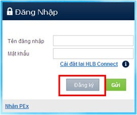

| Q10. | -
Nếu tôi đang sử dụng Hong Leong Connect Online Banking, tôi có cần phải đăng ký để sử dụng ứng dụng Hong Leong Connect Mobile Banking không?
-
Không. Quý khách chỉ cần đăng nhập Mobile Banking bằng cách sử dụng Tên đăng nhập và Mật khẩu của Online Banking.
|
| Q11. | -
Nếu tôi không có tài khoản Hong Leong Connect Online Banking, tôi có cần phải đăng ký tài khoản trực tuyến trước không?
-
Không. Quý khách có thể đăng ký tài khoản của cả hai dịch vụ Hong Leong Connect Online Banking và Hong Leong Connect Mobile Banking một lần duy nhất [đăng ký 2 trong 1] bằng cách kích hoạt ứng dụng Hong Leong Connect trên điện thoại thông minh của Quý khách.
|
| Q12 | -
Làm thế nào để tôi có thể đăng ký được ứng dụng Hong Leong Connect Mobile Banking?
-
Trước khi tiến hành đăng ký:
| | ♦ | Hãy chắc chắn rằng Quý khách có ít nhất một tài khoản tại HLBVN (Tài khoản Vãng lai/Tiết kiệm/Tiền gửi có kỳ hạn/Vay) trong trạng thái Đang hoạt động, hoặc thẻ ATM/Thẻ ghi nợ của Quý khách trong trạng thái Đang hoạt động – Quý khách có thể kiểm tra tình trạng tài khoản tại Chi nhánh hoặc liên hệ Trung tâm Dịch vụ Khách hàng Hong Leong theo số +84873008100. |
| | ♦ | Nếu Quý khách đã đăng ký số điện thoại di động và địa chỉ email với Ngân hàng từ trước, Quý khách chỉ cần liên hệ Trung tâm Dịch vụ Khách hàng Hong Leong để xác nhận lại cho dịch vụ Hong Leong Connect. |
| | ♦ | Nếu Quý khách chưa cung cấp cho Ngân hàng số điện thoại và địa chỉ email hiện tại, vui lòng đến bất kỳ Chi nhánh nào của Ngân hàng để đăng ký/cập nhật. |
-
Các bước đăng ký:
Quý khách có thể thực hiện đăng ký trực tuyến tại
https://www.hongleongconnect.com.vn hoặc trên ứng dụng Mobile Banking bằng cách thực hiện những bước đơn giản sau.
| | Online Banking |
|  |
| |
| |
| |
| | Mobile Banking |
| |
Bước 1: Chế độ đăng ký
Quý khách có thể tùy chọn chế độ đăng ký:
| ♦ | Sử dụng thẻ ATM/Thẻ ghi nợ; hoặc |
| ♦ | Sử dụng Tài khoản (Tài khoản Vãng lai/Tiết kiệm/Tiền gửi có kỳ hạn/Vay) |
Bước 2: Nhập thông tin
Nếu Quý khách sử dụng Thẻ ATM/Thẻ ghi nợ, vui lòng điền các thông tin sau:
| | ♦ | Số thẻ ATM/Thẻ ghi nợ |
| | ♦ | Mã PIN ATM |
| | ♦ | Giấy tờ nhân thân |
| | ♦ | Số giấy tờ nhân thân |
| | ♦ | Mã CAPTCHA |
Sau đó, nhấn Tiếp.
Hoặc, nếu Quý khách sử dụng Tài khoản (Tài khoản Vãng lai/Tiết kiệm/Tiền gửi có kỳ hạn/Vay), vui lòng điền các thông tin sau:
| | ♦ | Loại tài khoản |
| | ♦ | Số tài khoản |
| | ♦ | Mã kích hoạt (là một chuỗi các ký tự chữ và số được Ngân hàng cung cấp khi Quý khách gửi yêu cầu qua Trung tâm Dịch vụ Khách hàng hoặc tại các Chi nhánh. Mã này chỉ có thể sử dụng một lần và có giá trị trong vòng 3 ngày kể từ ngày tạo) |
| | ♦ | Giấy tờ nhân thân |
| | ♦ | Số giấy tờ nhân thân |
| | ♦ | Mã CAPTCHA |
Sau đó, nhấn Tiếp.
Bước 3: Xác nhận Mã TAC
Nhập Mã TAC (Mã xác nhận giao dịch: một chuỗi gồm 6 số được gửi đến số điện thoại di động của Quý khách. Mã TAC có giá trị trong 5 phút kể từ khi được yêu cầu), sau đó nhấn Tiếp.
Bước 4: Tạo thông tin bảo mật
Tạo Tên đăng nhập và Mật khẩu của Quý khách để đăng nhập Hong Leong Connect.
Đánh dấu Đồng ý với Điều khoản và Điều kiện của dịch vụ Hong Leong Connect, sau đó nhấn Xác nhận.
Bước 5 : Xác nhận
Chúc mừng Quý khách! Bây giờ Quý khách có thể tiến hành đăng nhập ngay lập tức với Tên đăng nhập và Mật khẩu vừa tạo để trải nghiệm dịch vụ Hong Leong Connect Online Banking / Mobile Banking.
Điều kiện sử dụng dịch vụ
| | ♦ | Chủ thẻ ATM/Thẻ ghi nợ Hong Leong; hoặc |
| | ♦ | Chủ tài khoản (Chủ tài khoản chính hoặc Đồng chủ tài khoản) của tài khoản Vãng lai/Tiết kiệm/Tiền gửi có kỳ hạn/Vay tại HLBVN. |
|
| Q13. | -
Tôi là khách hàng mới của Ngân hàng Hong Leong và vừa đăng ký lần đầu thành công ứng dụng trên điện thoại thông minh. Tôi có thể truy cập tài khoản ngân hàng và thực hiện giao dịch Online Banking qua Internet không?
-
Có. Quý khách có thể sử dụng Hong Leong Connect Online Banking qua Internet bằng cách sử dụng Tên đăng nhập và Mật khẩu mà Quý khách đã tạo khi đăng ký bằng điện thoại di động của Quý khách.
|
| Q14. | -
Tôi có thể đăng nhập ứng dụng Hong Leong Connect Mobile Banking như thế nào?
-
Bước 1: Tìm và chọn ứng dụng “Hong Leong Connect Vietnam” từ Màn hình chủ/Thư mục Ứng dụng.
Bước 2: Nhập Tên đăng nhập và Mật khẩu, sau đó trượt đến từ “Đăng ký”.
|
| Q15. | -
Trong trường hợp tôi gặp trục trặc khi đăng nhập vào Hong Leong Connect Mobile Banking, tôi nên làm gì?
-
Quý khách vui lòng đóng ứng dụng và mở lai để đăng nhập. Quý khách vui lòng kiểm tra Tên đăng nhập và Mật khẩu để xác nhận thông tin chính xác. Nếu Quý khách vẫn không thể đăng nhập, vui lòng liên hệ Trung tâm Dịch vụ Khách hàng Hong Leong tại +84873008100 để được hỗ trợ.
|
| Q16. | -
Nếu như tôi quên Tên đăng nhập và Mật khẩu thì sao?
-
Nếu Quý khách quên Tên đăng nhập/Mật khẩu, Quý khách có thể nhấp vào “Cài đặt lại Hong Leong Connect” và tạo Tên đăng nhập và Mật khẩu mới để đăng nhập vào lại Hong Leong Connect Mobile Banking. Quý khách có thể cần đến Mã kích hoạt để tạo Tên đăng nhập và Mật khẩu mới (nếu Quý khách đăng ký Mobile Banking bằng số tài khoản).
|
| Q17. | -
Tôi có thể thay đổi Mật khẩu cho thuận tiện không?
-
Có. Quý khách nên thay đổi mật khẩu định kỳ để đảm bảo tính bảo mật cho tài khoản Mobile Banking. Quý khách chỉ cần đăng nhập vào tài khoản Online Banking, đi đến phần “Khác” – “Cài đặt” – “Thay đổi Mật khẩu” để thay đổi mật khẩu cần thiết.
|
| Q18. | -
Điều gì sẽ xảy ra nếu tôi không thực hiện hoạt động nào trong suốt thời gian tôi đăng nhập?
-
Hong Leong Connect Mobile Banking sẽ tự động đăng xuất Quý khách nếu không có hoạt động nào thực hiện sau hơn 5 phút.
|
| Q19. | -
Điều gì sẽ xảy ra khi tôi nhập sai 3 lần liên tiếp Tên đăng nhập/Mật khẩu hoặc 9 lần liên tiếp mã TAC?
-
Khi Quý khách nhập sai 3 lần liên tiếp Tên đăng nhập/Mật khẩu hoặc 9 lần liên tiếp mã TAC, tài khoản của Quý khách sẽ tự động bị đóng. Vui lòng nhấp vào “Cài đặt lại Hong Leong Connect” và tạo Mật khẩu mới để đăng nhập lại Hong Leong Connect Mobile Banking. Quý khách có thể cần đến Mã kích hoạt từ Chi nhánh/Phòng giao dịch của Ngân hàng Hong Leong hoặc qua Trung tâm Dịch vụ Khách hàng Hong Leong để tạo Mật khẩu mới và kích hoạt lại tài khoản của Quý khách (nếu Quý khách đăng ký bằng số tài khoản).
|
| Q20. | -
Tôi nên làm gì nếu tôi nghi ngờ có sự truy cập trái phép vào tài khoản của tôi tại Hong Leong Connect Mobile Banking?
-
Quý khách vui lòng gọi đến Trung tâm Dịch vụ Khách hàng Hong Leong hoặc đến bất kỳ Chi nhánh/Phòng giao dịch nào để tạm khóa hoạt động của tài khoản Hong Leong Connect ngay lập tức. Vui lòng nhấp vào “Cài đặt lại Hong Leong Connect” và tạo Mật khẩu mới để đăng nhập vào lại Hong Leong Connect Mobile Banking.
|
| Q21. | -
Tôi bị mất điện thoại chứa nhiều thông tin bảo mật của tôi (Tên đăng nhập, Mật khẩu), tôi có thể làm gì để đăng nhập vào Hong Leong Connect Mobile Banking?
-
Để đảm bảo tính an toàn và bảo mật cho tài khoản của Quý khách, Quý khách nên liên hệ với Trung tâm Dịch vụ Khách hàng Hong Leong số +84873008100 và yêu cầu đình chỉ dịch vụ Online Banking ngay lập tức. Vui lòng cập nhật số điện thoại mới của Quý khách với Ngân hàng Hong Leong và cài đặt lại Hong Leong Connect khi Quý khách muốn sử dụng.
|
| Q22. | -
Tôi vừa hủy/xóa ứng dụng Hong Leong Connect Mobile Banking trên điện thoại. Tôi có thể truy cập Hong Leong Connect Online Banking không?
-
Có. Việc hủy hoặc xóa ứng dụng Hong Leong Connect Mobile Banking trên thiết bị của Quý khách không ảnh hưởng đến tài khoản Hong Leong Connect. Quý khách vẫn có thể truy cập tài khoản của Quý khách qua Hong Leong Connect Online Banking.
|
| Q23. | -
Tôi vừa hủy dịch vụ Hong Leong Connect Online Banking, tôi có thể truy cập vào Hong Leong Connect Mobile Banking không?
-
Không. Quý khách được yêu cầu để đăng ký lại tài khoản Hong Leong Connect. Tài khoản Hong Leong Connect đã từng được sử dụng để truy cập vào Online Banking và Mobile Banking.
|
| Q24. | -
Tôi mất/thay đổi điện thoại, tôi có thể tải ứng dụng Hong Leong Connect đến điện thoại mới của tôi và tiếp tục đăng nhập vào tài khoản hiện tại Hong Leong Connect Mobile Banking không?
-
Có. Quý khách có thể tải ứng dụng Hong Leong Connect Mobile Banking tối đa trên năm (5) thiết bị di động của Quý khách và sử dụng cùng Mã bảo mật để đăng nhập và truy cập dịch vụ Mobile Banking. Một khi Quý khách tải ứng dụng trên tối đa năm (5) thiết bị di động của Quý khách, những lần đăng ký hoặc đăng nhập từ thiết bị thứ sáu (6) sẽ bị thất bại.
|
| Q25. | -
Tôi vừa thay đổi số điện thoại di động, tôi có thể truy cập ứng dụng Mobile Banking trên điện thoại hiện tại của tôi?
-
Có. Quý khách có thể truy cập ứng dụng Mobile Banking thậm chí khi Quý khách đổi số điện thoại. Vui lòng chắc chắn rằng Quý khách đã đăng ký lại số điện thoại mới cho mã TAC tại các chi nhánh của chúng tôi hoặc Trung tâm Dịch vụ Khách hàng Hong Leong.
|